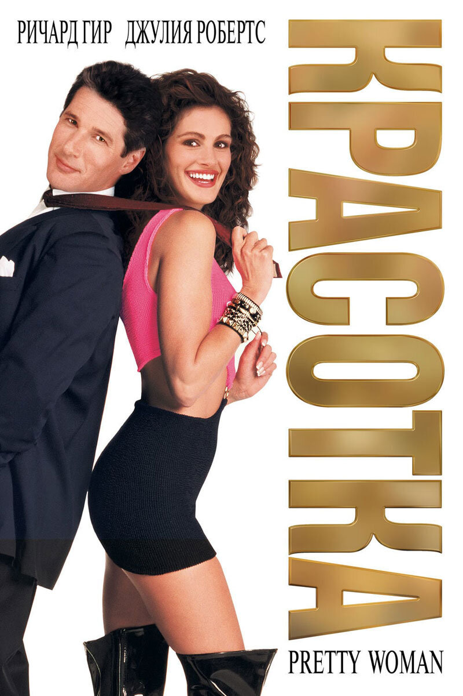
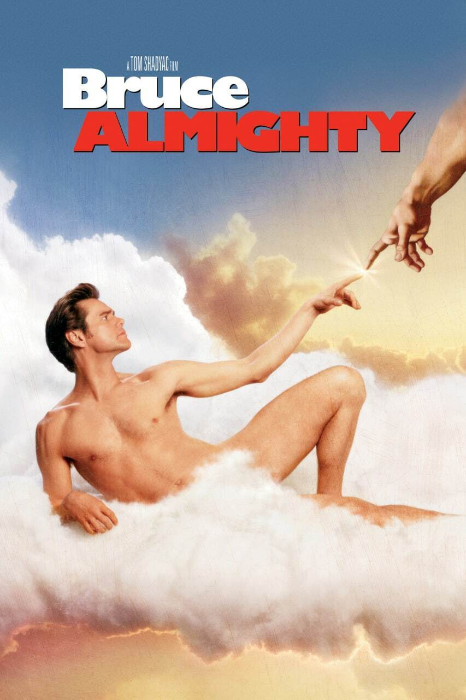
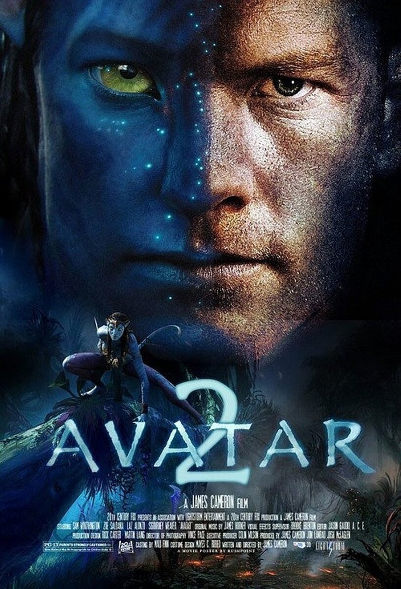

-
{% for book in books %}
-
{{ book.title }}
{{ book.description }}
Подробнее
{% endfor %}
Два стула
Лента книг

Красотка
Финансовый магнат Эдвард Льюис, проезжая по ночному городу, останавливается около красивой женщины. Ее зовут Вивьен и она берет только наличными. Наутро он понимает, что не хочет расставаться с ней и предлагает девушке остаться в его номере в отеле еще на некоторое время — за дополнительный гонорар.
Подробнее

Брюс всемогущий
Брюс Нолан — популярный ведущий теленовостей в Буффало. Он — пессимист, и его ничего не интересует в этой жизни, даже девушка Грейс, которая любит его, несмотря на всю его вредность.
Подробнее

Аватар 2
После принятия образа аватара солдат Джейк Салли становится предводителем народа на`ви и берет на себя миссию по защите новых друзей от корыстных бизнесменов с Земли. Теперь ему есть за кого бороться — с Джейком его прекрасная возлюбленная Нейтири. Когда на Пандору возвращаются до зубов вооруженные земляне, Джейк готов дать им отпор.
ПодробнееФантастические твари
Фильм рассказывает о приключениях писателя Ньюта Скамандера в Нью-Йоркском секретном обществе волшебниц и волшебников, происходивших за 70 лет до того, как Гарри Поттер прочитает книгу этого писателя в школе.
ПодробнееЧеловек на луне
Судьба любит смельчаков, а Нил Армстронг однозначно принадлежит к их числу. Весь мир знает его имя, но мало кому известно, какой ценой астронавту дался маленький шаг, ставший огромным скачком для всего человечества.
Подробнее.jfif)
Игра в кальмара
Сон Ги-хун уже немолод, разведён, по уши погряз в долгах и сидит на шее у старенькой матери. Даже выигранные на скачках деньги в его руках долго не задерживаются, и однажды он встречает в метро загадочного незнакомца, который сначала предлагает сыграть в детскую игру, а затем вручает Ги-хуну немалую сумму и визитку. Но радость мужчины сменятся отчаянием, когда он узнаёт, что бывшая жена с новым мужем собираются увезти его дочь в Америку. Он звонит по номеру с визитки и становится последним участником тайных игр на выживание с призом в 40 миллионов долларов.
Подробнее